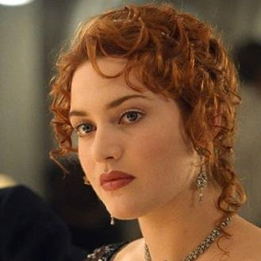
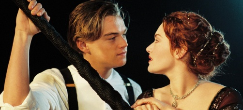
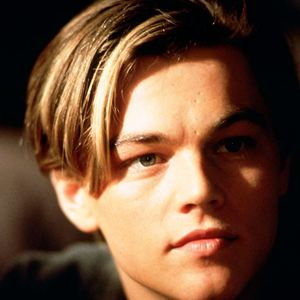
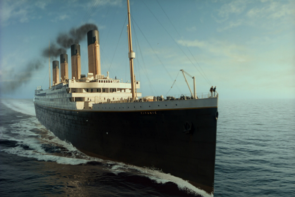

TITANIK
Reziser:Dzejms Kameron
Glumci: Kejt Vinslet, Leonardo Di Kaprio
Trejler:

Titanik
Reziser: Dzejms Kameron
Glavne uloge: Leonardo di Caprio, Kate Winslet
Trajanje: 150min
Zanr: Drama
Zemlja: SAD
Muzika: Dzejms Hornern
PRIKAZUJE SE:
Vreme: 16:00Cena: 300 RSD
Sava Centar
Radnja:
Radnja filma zapocinje 1996. godine kada lovac na blago, Brok Lovet, zajedno sa svojim timom zaranja duboko u Atlantski okean prema olupini Titanika u potrazi za vrednom dijamantskom ogrlicom. Nakon sto u sefu pronadju crtez mlade devojke koja nosi ogrlicu i isti objave putem medija, ubrzo im se javlja stara gospodja koja tvrdi da je upravo ona devojka sa crteza. Pomocu naracije, stara Rouz vraca gledaoce u 1912. godinu, u luku Sauthempton odakle Titanik krece na svoje prvo putovanje. Osim Rouz, nesrecne devojke zatocene u okove drustvenog sloja u kome zivi, upoznajemo njenu majku Rut i verenika Kaledona Hoklija, sina bogatog pitsburskog tajkuna koji ce vencanjem sa Rouz otplatiti sve dugove u koje se uvukao njen mrtvi otac. U isto vreme, mladi nadobudni Dzek Doson osvaja kartu za Titanik na pokeru i u poslednji cas se sa svojim prijateljem Fabrizijem ukrcava na brod. Dzek i Rouz susrecu se u trenutku kad Rouz pokusava da se ubije, zeleci da se baci sa krme broda. Tokom putovanja koje ce trajati 4 dana, njih dvoje razvijaju prijateljstvo koje ce prerasti u pravu ljubavnu romansu nakon sto nacrta Rouz sa ogrlicom koju joj je poklonio verenik Kaledon na pocetku putovanja. Dana 14. aprila 1912. godine, nekoliko sati nakon sto su Dzek i Rouz doziveli svoje najromanticnije trenutke Titanik se susrece sa svojom vlastitom sudbinom: velikom santom leda usred Atlantskog okeana. Buduci da brod plovi punom parom, ne uspeva da zaobidje santu pa je snazno udara duzinom od skoro 20 metara s bocne strane. Nakon sto svima postane jasno da ce nepotopivi brod ipak potonuti na dno okeana, nastaje masovna panika, a u celom ludilu Dzek ce biti uhvacen, Kaledon ce pokusati oboje da ubije, a nakon toga da spasi sebe pretvarajuci se da je otac jedne siromasne devojcice, bend ce nastaviti da svira. Brod zatim tone a Dzek i Rouz se spasavaju tako sto se uhvate za neki drveni predmet. Dzek se u medjuvremenu smrzava, a Rouz mu obecava da nikad nece odustati. Kada se camac za spasavanje prezivelih priblizavao Rouz je zadnjim naporom vikala, medjutim nije je niko cuo. Kada je camac poceo da odlazi Rouz skoci sa drvenog objekta na kome je sedela i otpliva do jednog smrznutog oficira, uzme mu pistaljku i dune u nju, te se camac vrati i pokupi je. I tako je prezivela. Kada ju je Brok Lovet pitao za dijamantsku ogrlicu ona je rekla da je verovatno ostala kod Kaledona. Ali ogrlica je ostala u dzepu ogrtaca koji joj je dao Kaledon. Rouz se penje na brod koji nosi podmornice i baca ogrlicu u Atlantski okean.|  |  |  |  |